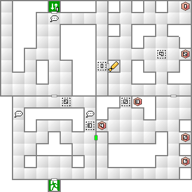
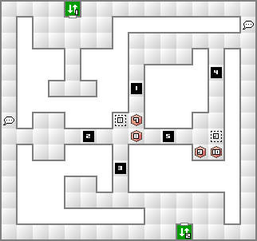
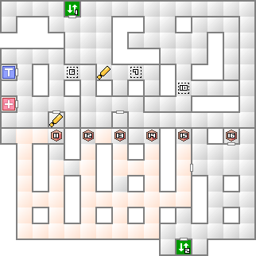
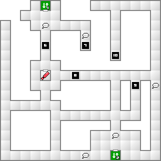

ここに出現する魔獣カタキラウワがムドを使用してくる。呪殺に耐性が無ければ例え主人公と言えども即死してしまう。そうならない為にも、主人公には常に呪殺無効の防具を装備させておきたい。
1階で電源を入れたら3階へ。エレベーターを降りた所の前方やや左に鍵があるので拾っておこう。同じ階にある電源室に拾った鍵で入り、2階のエレベーターを起動させる。
2階の南にあるエレベーターから4階へ進む。3階にはアイテムが多数置いてあるが、立ち止まると落ちる通路があるので、マッパーを使い、×ボタンで移動して宝箱まで到達しよう。1階東にある宝箱へは、2階東付近の通路の途切れから落下すれば到達することができる。
ラク・カジャ持ちな上に特技の空欄が3と多いので、容易にカジャ魔法を継承できる。VR美術館でタル・カジャ持ちの龍王ヤトノカミを作っていれば、タル・カジャを継承したアイラーヴァタを作れる。また、妖精シルキーを使えば回復魔法をそのまま引き継ぐので、立派な補助役として活躍してくれる。
ナルキッソスに限らず神樹は全て火炎に弱く、速さが極端に低いという特徴を持つが、それさえ克服できるならそれなりに使える種族だ。ナルキッソスの持つアイオンの雨はナルキッソス自体の魔力の高さとも相まってかなりの威力になるだろう。
ただ、大量に敵が出たとしても、足の遅さ故に一掃したあとに発動してしまうぐらいの遅さなので微妙ではある。どうせなら特技と魔法そのままで足の速い悪魔と一緒に造魔にしてしまうのもいいかもしれない。
| 能力 | LV36 HP3812 MP1112 力13 知09 魔12 耐13 速08 運05 |
|---|---|
| 特技 | アギ アギラオ マハ・ラギオン メギド |
| メギドラ シー・マーカー デストロイパイル |
| 火炎 | 氷結 | 電撃 | 衝撃 | 破魔 | 呪殺 | 万能 |
|---|---|---|---|---|---|---|
| 精神 | 神経 | 魔力 | 打撃 | 斬撃 | 技 | 銃撃 |
| 50 | 50 | 200 | 100 | 無効 | 無効 | 100 |
| 無効 | 無効 | 無効 | 100 | 100 | 無効 | 無効 |
このムーウィスは補助魔法さえ揃えられればザコとなる。最初の4ターン+1ターンは絶対攻撃してこないので、この間に補助魔法をかけまくってゴリ押しする。
女神スカアハや妖鬼トケビのラク・ンダ、妖鳥コカクチョウなどのタル・カジャ所持悪魔、幻魔ハチダイオウなどの打撃専門。この3体がいれば十分に勝てる相手だ。おまけとして妖魔マルトなどでもいい。ハチダイオウには酒を最高段階まで飲ませておけば、補助魔法最高段階状態での端杯手の突きで1000近いダメージが期待できる。ネミッサを予めギリギリまでHPを減らしておいて、ロマ魔法を使うのもいい。
攻撃力が足りない場合は、2回目の攻撃リード時に総攻撃をしかけるのもいい。攻撃リード時は何があっても行動を変えないので、体制を整えるチャンスだ。
HPが半分以下になると、強力な魔法を使われてしまうので、絶対に攻撃させないうちに倒すこと。
マダム銀子から譲り受ける無銘の刀。悪魔を合体させることで強力な武器にすることができるが、現時点では大して強くない武器しか作れないだろう。特殊合体剣にしてもいいが、必要な悪魔のレベルが結構高いので、しばらくは無銘の刀のままでよい。これが必要になるのは終盤になってからだ。
レオン自工をクリアした段階で恐らくレベルが30に達しているものと思われる。そこで、女神の最低位であるフォルトゥナを作成し、コペルニクスを入手しよう。
女神を作る場合、一番手っ取り早いのは天使＋妖鳥＋聖獣だろう。どれも比較的手に入りやすい種族だ。既に材料を持っている場合はいいが、何も持っていないと仮定してシーアークで作ってみよう。
以上の手順で女神フォルトゥナが完成するので、早速王国屋で依頼を達成しよう。
コペルニクスをインストールすると9割以上の確率で合体事故が発生する。合体事故は主人公のレベル+5から-15までの悪魔がランダムに選ばれる。魔法継承は行われないが、レベル次第では、妖精ピクシー＋地霊ノッカーで破壊神トナティウなんてのが出てきたりする。手元の余ったダーク悪魔を再利用することにも役立つだろう。
また、本来合体事故でしか出現しない「珍獣」と「秘神」を意図的に作れるようになる。例えば珍獣クダができた場合は、王国屋で女神スカアハと交換できてしまう。秘神カンギテンができれば歓喜の寝具を入手できるだろう。是非活用して欲しい。



南側の色違いの床は立ち止まると戻されてしまう。

| 天使アークエンジェル(21) | 龍王ヤトノカミ(22) | 魔獣カタキラウワ(22) |
| 夜魔ザントマン(21) | 鬼女リャナンシー(19) | 凶鳥グルル(25) |
| 妖獣カクエン(23) | 屍鬼くびなしライダー(24) | 邪龍ハクジョウシ(21) |
| 天使アークエンジェル(21) | 龍王ヤトノカミ(22) | 魔獣カタキラウワ(22) |
| 夜魔ザントマン(21) | 堕天使ニスロク(24) | 妖鬼トケビ(23) |
| 鬼女リャナンシー(19) | 凶鳥グルル(25) | 妖獣カクエン(23) |
| 屍鬼くびなしライダー(24) | 邪龍ハクジョウシ(21) | 外道マッドガッサー(25) |
| 妖魔シワンナ(32) | 妖魔マルト(25) | 龍王ヤトノカミ(22) |
| 魔獣カタキラウワ(22) | 堕天使ニスロク(24) | 妖鬼トケビ(23) |
| 凶鳥グルル(25) | 妖獣カクエン(23) | 邪鬼ラームジェルグ(26) |
| 屍鬼くびなしライダー(24) | 外道アーバンテラー(31) | 外道マッドガッサー(25) |